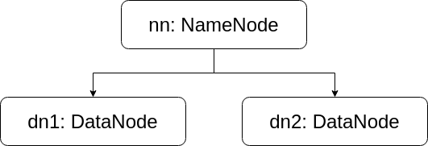

HDFS クラスターは Hadoop クラスターの上に構築されます。HDFS は Hadoop の主要なデーモンであるため、HDFS クラスターの構成プロセスは Hadoop クラスター構成プロセスの代表例です。
Docker を使用すると、クラスター環境をより便利かつ効率的に構築できます。
各コンピュータの設定
Hadoop でクラスターを構成する方法、異なるコンピュータにはどのような設定が必要かといった疑問は、学習の中で生じます。この章では典型的な例を示しますが、Hadoop の複雑で多様な設定項目はこれだけにとどまりません。
HDFS のネームノードは、SSH を介してデータノードをリモート制御します。そのため、重要な設定項目はネームノードで設定し、重要でないノード設定は各データノードで設定する必要があります。つまり、データノードとネームノードの設定は異なってもよく、異なるデータノード間の設定も異なる場合があります。
ただし、この章ではクラスターを簡単に構築するため、同じ設定ファイルを Docker イメージの形で全クラスターノードに同期させます。あらかじめ説明しておきます。
具体的な手順
全体的な考え方は次のとおりです。まず Hadoop を含むイメージを設定して、クラスター内のすべてのノードで共通して使用できる状態にします。次に、それをプロトタイプとして複数のコンテナを生成し、クラスターを構成します。
プロトタイプの構成
まず、事前に準備した hadoop_proto イメージを使用してコンテナとして起動します：
docker run -d --name=hadoop_temp --privileged hadoop_proto /usr/sbin/init
Hadoop の設定ファイルディレクトリに移動します：
cd $HADOOP_HOME/etc/hadoop
ここにあるファイルの役割について簡単に説明します：
| ファイル | 役割 |
|---|---|
| workers | すべてのデータノードのホスト名または IP アドレスを記録します |
| core-site.xml | Hadoop のコア設定 |
| hdfs-site.xml | HDFS の設定項目 |
| mapred-site.xml | MapReduce の設定項目 |
| yarn-site.xml | YARN の設定項目 |
ここでは次のような単純なクラスターを設計します：
- 1つのネームノード nn
- 2つのデータノード dn1, dn2

まず workers を編集し、ファイルの内容を次のように変更します：
dn1 dn2
次に core-site.xml を編集し、<configuration> 内に次の設定項目を追加します：
<!-- 配置 HDFS 主机地址与端口号 -->
<property>
<name>fs.defaultFS</name>
<value>hdfs://nn:9000</value>
</property>
<!-- 配置 Hadoop 的临时文件目录 -->
<property>
<name>hadoop.tmp.dir</name>
<value>file:///home/hadoop/tmp</value>
</property>
hdfs-site.xml を設定し、<configuration> 内に次の設定項目を追加します：
<!-- 每个数据块复制 2 份存储 -->
<property>
<name>dfs.replication</name>
<value>2</value>
</property>
<!-- 设置储存命名信息的目录 -->
<property>
<name>dfs.namenode.name.dir</name>
<value>file:///home/hadoop/hdfs/name</value>
</property>
最後に SSH を設定する必要があります：
ssh-keygen -t rsa -P "" -f ~/.ssh/id_rsa ssh-copy-id -i ~/.ssh/id_rsa hadoop@localhost
ここまででクラスターのプロトタイプの設定は完了です。コンテナを終了し、新しいイメージ cluster_proto にコミットします：
docker stop hadoop_temp docker commit hadoop_temp cluster_proto
必要に応じて、一時イメージ hadoop_temp を削除できます。
クラスターのデプロイ
次にクラスターをデプロイします。
まず、Hadoop クラスター用の専用ネットワーク hnet を作成します：
docker network create --subnet=172.20.0.0/16 hnet
次にクラスターのコンテナを作成します：
docker run -d --name=nn --hostname=nn --network=hnet --ip=172.20.1.0 --add-host=dn1:172.20.1.1 --add-host=dn2:172.20.1.2 --privileged cluster_proto /usr/sbin/init docker run -d --name=dn1 --hostname=dn1 --network=hnet --ip=172.20.1.1 --add-host=nn:172.20.1.0 --add-host=dn2:172.20.1.2 --privileged cluster_proto /usr/sbin/init docker run -d --name=dn2 --hostname=dn2 --network=hnet --ip=172.20.1.2 --add-host=nn:172.20.1.0 --add-host=dn1:172.20.1.1 --privileged cluster_proto /usr/sbin/init
ネームノードに入ります：
docker exec -it nn su hadoop
HDFS をフォーマットします：
hdfs namenode -format
エラーがなければ、次のステップとして HDFS を起動できます：
start-dfs.sh
起動に成功すると、jps コマンドで NameNode と SecondaryNameNode の存在を確認できるはずです。ネームノードには DataNode プロセスは存在しません。このプロセスは dn1 と dn2 で実行されるためです。
これで、前の章で疑似クラスターモードについて説明したときと同じ方法で HDFS の動作を確認できます。HDFS の使用方法も違いはありません（ネームノードがクラスター全体を代表します）。
クリックしてノートを共有
<p style="font-size:14px;">ノートはこの記事の内容を拡張したものである必要があります！</p><br> <p style="font-size:12px;"><a href="../tougao.html" target="_blank">記事の投稿は、ここをクリック</a></p> <p style="font-size:14px;"><a href="./runoob-user-test-intro.html" target="_blank">登録招待コードの取得方法</a></p> <h3 class="text-muted"><i class="fa fa-info-circle" aria-hidden="true"></i> ノートを共有する前に<a href=".." class="runoob-pop">ログイン</a>が必要です！</h3> <p><a href="./runoob-user-test-intro.html" target="_blank">登録招待コードの取得方法</a></p>